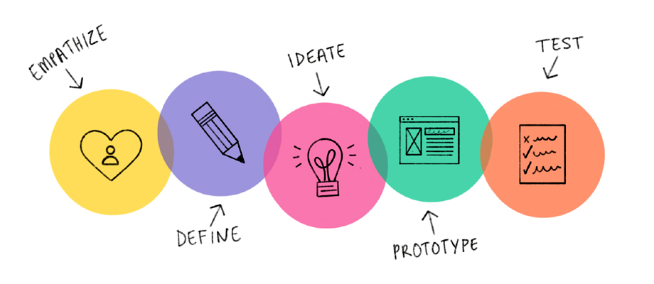

Dit is een methode waarbij je in de huid kruipt van de gebruikers. Zo wordt er een nieuw probleem ontdekt en worden er oplossingen bedacht, gemaakt en getest om te kijken of het daadwerkelijk de probleem oplost. De methode is onderverdeeld in vijf fases: empathise, define, ideate, prototype en test. De fases zijn tijdens dit afstudeerproject niet lineair gevolgd.

Fase 1: Empathise
Tijdens de empathise fase is er onderzoek gedaan naar het probleem en waarom het probleem bij ICT
Group zich voordoet. Er is veldonderzoek gedaan in de vorm van gesprekken en interviews met de
stakeholders, en ik heb biebonderzoek gedaan naar problemen die internationals ervaren over de hele
wereld.
Fase 2: Define
In deze fase werden de informatie verkregen uit de empathise fase geanalyseerd om conclusies te
trekken. Uit de conclusies heb ik ‘how might we’ vragen geformuleerd die mij hielpen om oplossingen te
bedenken voor het probleem.
Fase 3: Ideate
Tijdens derde fase werden er ideeën bedacht die de problemen moeten oplossen. Dit heb ik alleen en ook
samen met de recruiters, HR en de internationals gedaan. De ideeën zijn getest bij de internationals
om te kijken welke ideeën hun het meest aanspreekt.
Fase 4: Prototype
In deze fase wordt er een uitgekozen idee uitgewerkt tot een prototype. Eerst heb ik een wireframe
gemaakt in Adobe XD. Na het verkrijgen van feedback in Fase 5 heb ik een prototype gemaakt waarbij ik
de feedback heb verwerkt.
Fase 5: Test
De prototypes zijn uiteindelijk getest bij de internationals om te kijken of de uitwerking van dit
idee aanslaat. Na de testfase werd de feedback verzameld, geanalyseerd en verwerkt in de een van de
vorige fases.
van der Wardt, R. (2019, 21 november). De Design Thinking Methode Uitgelegd: In 5 Fases Naar Innovatie. Geraadpleegd op 5 december 2019, van https://designthinkingworkshop.nl/design-thinking-methode/
EURIB. (2019, 5 augustus). Design thinking: samenvattingen van artikelen en modellen. Geraadpleegd op 12 september 2019, van https://www.eurib.net/design-thinking/
Interaction Design Foundation. (z.d.). What is Design Thinking? Geraadpleegd op 2 september 2019, van https://www.interaction-design.org/literature/topics/design-thinking